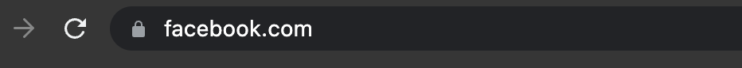
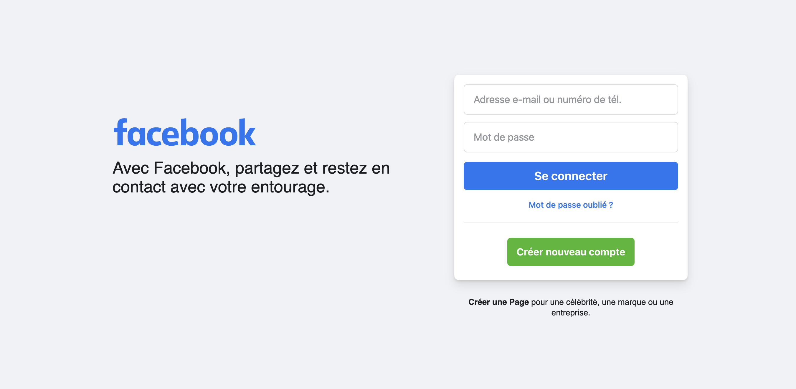
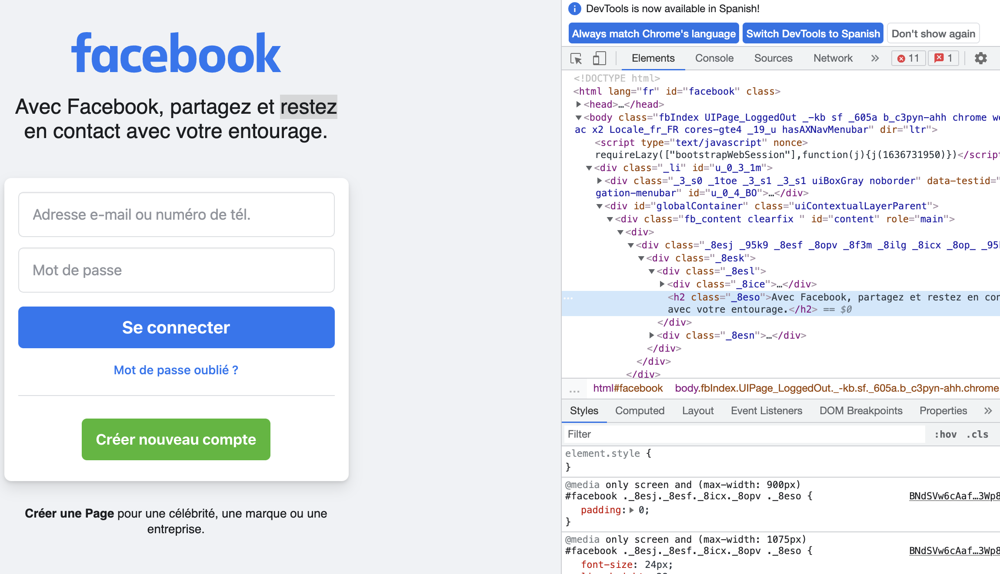
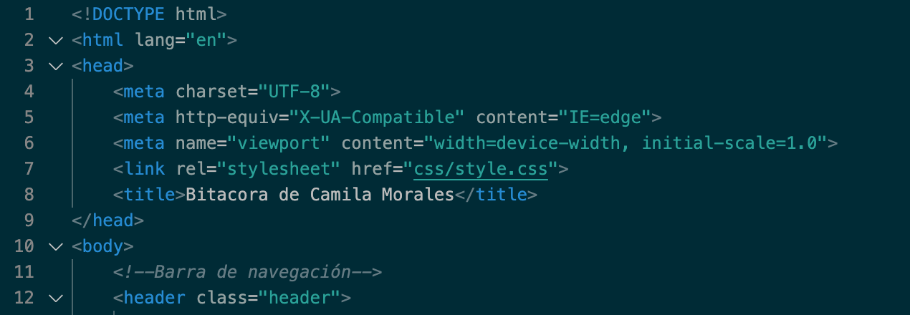

Clase 1
Objetivos del curso
- Tecnologias de web abierta
- Estandares web
- Herramientas de desarrollo (Visual Studio Code)
- Control de versiones (de GitHub)
Comprender las posibilidades técnicas y particularidades del medio digital
- Visión crítica y reflexiva
- DAO of Web Design (articulo sobre desarrollo web, medio distinto de material gráfico y hay que encontrar formas para ese medio distinto, explorar este medio nuevo, como se debe hacer la web)
- Responsive web design - Implicit web design (evolución del concepto responsive)
- Resilient web design
Comprender las relaciones entre los contenidos, datos e interfaz
- Arquitectura de contenidos
- Modelamiento de datos
- Patrones de diseño
- Diseño de componentes
¿Cómo funciona un sitio web?
A un sitio web se accede desde una url
http - lenguaje en el que se comunica el cliente con el servidor
front end - es lo que hace el diseñador preocupado de lo que verá el cleinte en la interfaz web
back end - es todo lo nec esario para programar el servidor para que el usuario pueda verlo - peticiones, búsquedas de información en base de datos, alimentar la construcción de la pantalla para ser enviado al servidor
HTML - hypertext markup lenguaje (permite marcar el texto, entregar una jerarquía, qué es cada parte y a qué se refiere) (contenido y estructura, etiquetas - modos de indentificar)
CSS - cascading style sheets (estilos en cascada forma de darle estuilos al contenido html creado, presentación del contenido, selectores - se usan para seleccionar cada contenido y darle un estilo)

- padding
- font-family
- font-size
- font-weight
- background-color
- border
- border-radius
- cursor
JS - Selecciones que añaden eventos
Arquitecturas de intercomunicación del back end
Sitios estáticos
- Existen archivos fijos (html-css-js)
Sitios dinámicos (CMS - generador de contenidos)
Aplicaciones web
Aplicaciones web progresivas
- Benchmark - personas, escenarios
- Análisis del problema y de la competencia
- Identificar y conocer a los usuarios
- Definiciones estratégicas
- Mapa de arquitectura de contenidos
- Definición de jerarquias
- Relaciones
- Navegación
- Objetos y propiedades
- Wireframes - diagramas esquemáticos
- HTML-CSS-JS
- Estándares web
- Semántica
- Accesibilidad
- Performance
- Sitio web
- Estabilidad
- Escalabilidad
- Administración
El navegador solicita la información, el procesador toma los archivos y los devuelve, es decir estos archivos no cambian, estan siempre escritos con la información que se mostrará después.
El usuario accede al sitio web, el navegador manda la petición al sevridor y el procesador procesa la petición y pasa por la lógica del sitio y consulta información a la base de datos; que son utilizadas para guardar el historial de la información (contenido), donde hay distintos archivos para cada contenido y luego los devuelve.
La aplicación se conecta a una api - que es una forma de obtener base de datos más segura - existe un p´rograma dentro del navegador que pide datos a la api y la api responde con datos que muestran la información del navegador - se produce en el mismo navegador, en lugar de producirse en el servidor.
Toman el modelo anterior y le dan una vuelta más, se piensa la integración de la mejor forma de las características que son propias del dispositivo en el cual se consulta la información. El dispositivo le informa l sitio cual es la ubicación del usuario - se integran más datos.
¿Cómo es el proceso para construir un sitio web?
Metodología en cascada, requiere de la parte anterior para poder seguir avanzando